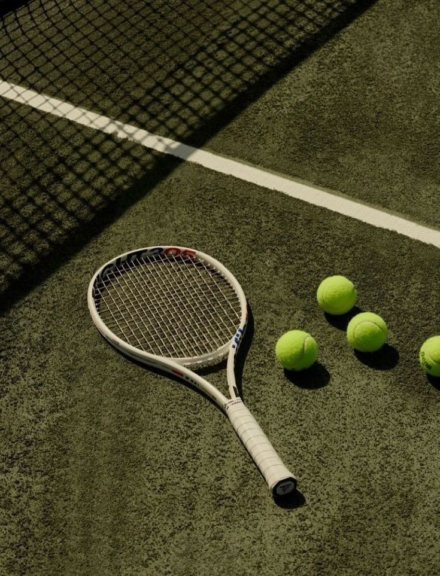

Présentation Vidéo
Mon Parcours Académique
Baccalauréat Général
Spécialités Mathématiques, Physique-Chimie et option Maths Expertes.


BUT Mesures Physiques (1ère année)
Une année enrichissante qui m'a permis d'acquérir une grande rigueur scientifique et une approche concrète de la technique.

BUT Informatique (Actuel)
Université Paris-Saclay, IUT d'Orsay. Approfondissement du développement logiciel et web.
Centres d'intérêt & Engagement

Le Tennis
Pratiquer le tennis m'a appris la persévérance et la gestion du stress. C'est un sport qui demande une analyse rapide de la situation et une grande discipline mentale, des qualités que je transpose quotidiennement dans mes projets de programmation.

Littérature Anglophone
Passionnée par les auteurs anglophones, cette pratique me permet de perfectionner mon anglais tout en explorant des structures de pensée différentes. Cela nourrit ma curiosité et ma capacité à comprendre des documentations techniques complexes en anglais.

Engagement Associatif & Coaching
À travers mon implication aux Restos du Cœur et au sein de l'association "Les Chelles de l'espoir" à Chelles, j'ai développé mon sens du contact et de l'organisation. Mon expérience en tant que coach sportif au foot m'a également appris à transmettre des savoirs, à animer une équipe et à prendre des responsabilités.